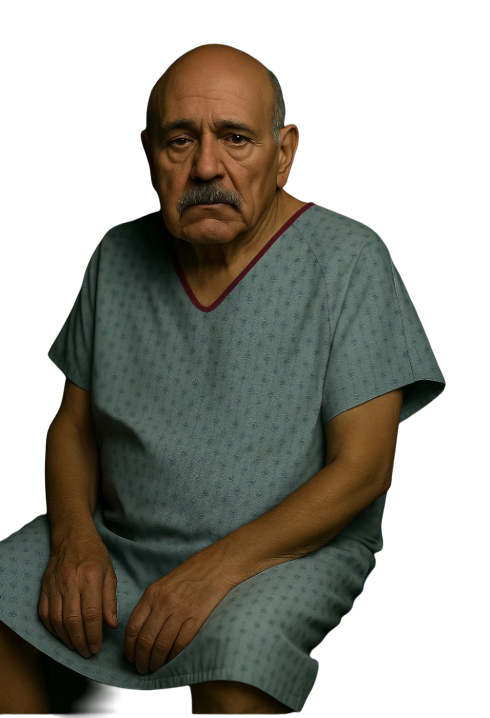
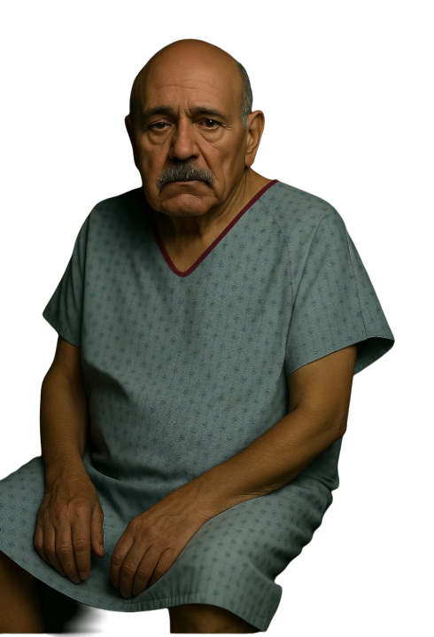

This is Pat. I don’t know why the nurse in charge sent you.
The other disciplines are on their way, but they’ll be a while.
He’s been referred in as a UTI.
The other disciplines are on their way, but they’ll be a while.
He’s been referred in as a UTI.
 
